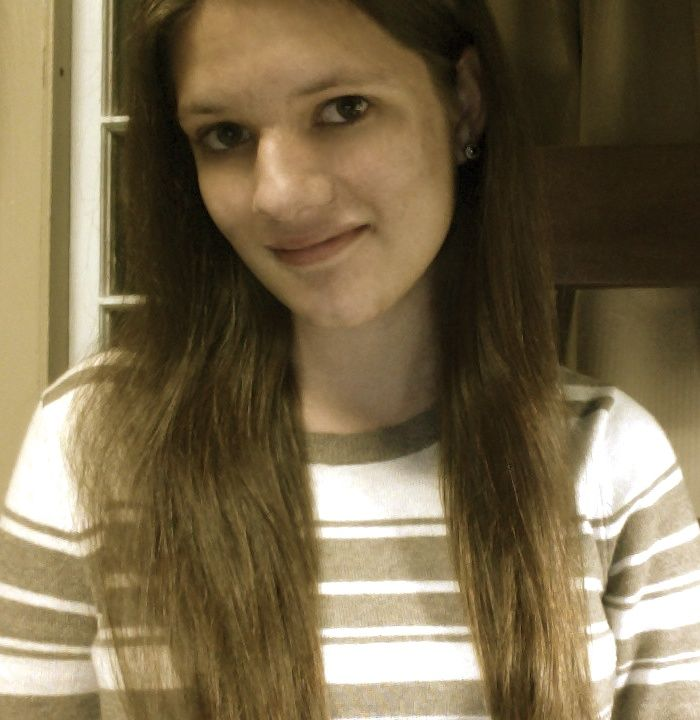

My name is Daniella de la Campa. I am a 20-year-old journalism student at the University of Florida.
I am from Miami but now live in Gainesville, Fla.
I am a native Spanish speaker and am in the process of learning Portuguese.
I have been published in The Independent Florida Alligator, the largest student-run newspaper in the country, and WUFT,news and public media for North Central Florida.
I am interested in both written and visual forms of journalism and would ideally like to combine the two one day.